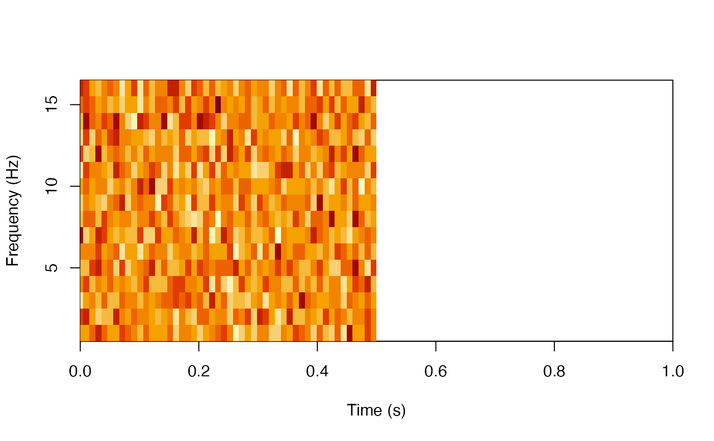

Collapse power array with given analysis cubes
Usage
collapse_power(x, analysis_index_cubes)
# S3 method for array
collapse_power(x, analysis_index_cubes)
# S3 method for FileArray
collapse_power(x, analysis_index_cubes)Arguments
- x
a
FileArray-classarray, must have 4 modes in the following sequenceFrequency,Time,Trial, andElectrode- analysis_index_cubes
a list of analysis indices for each mode
Value
a list of collapsed (mean) results
freq_trial_eleccollapsed over time-points
freq_time_eleccollapsed over trials
time_trial_eleccollapsed over frequencies
freq_timecollapsed over trials and electrodes
freq_eleccollapsed over trials and time-points
freq_trialcollapsed over time-points and electrodes
time_trialcollapsed over frequencies and electrodes
time_eleccollapsed over frequencies and trials
trial_eleccollapsed over frequencies and time-points
freqpower per frequency, averaged over other modes
timepower per time-point, averaged over other modes
trialpower per trial, averaged over other modes
Examples
if(!is_on_cran()) {
# Generate a 4-mode tensor array
x <- filearray::filearray_create(
tempfile(), dimension = c(16, 100, 20, 5),
partition_size = 1
)
x[] <- rnorm(160000)
dnames <- list(
Frequency = 1:16,
Time = seq(0, 1, length.out = 100),
Trial = 1:20,
Electrode = 1:5
)
dimnames(x) <- dnames
# Collapse array
results <- collapse_power(x, list(
overall = list(),
A = list(Trial = 1:5, Frequency = 1:6),
B = list(Trial = 6:10, Time = 1:50)
))
# Plot power over frequency and time
groupB_result <- results$B
image(t(groupB_result$freq_time),
x = dnames$Time[groupB_result$cube_index$Time],
y = dnames$Frequency[groupB_result$cube_index$Frequency],
xlab = "Time (s)",
ylab = "Frequency (Hz)",
xlim = range(dnames$Time))
x$delete(force = TRUE)
}
#> NOT_CRAN is TRUE/true (not on CRAN)
